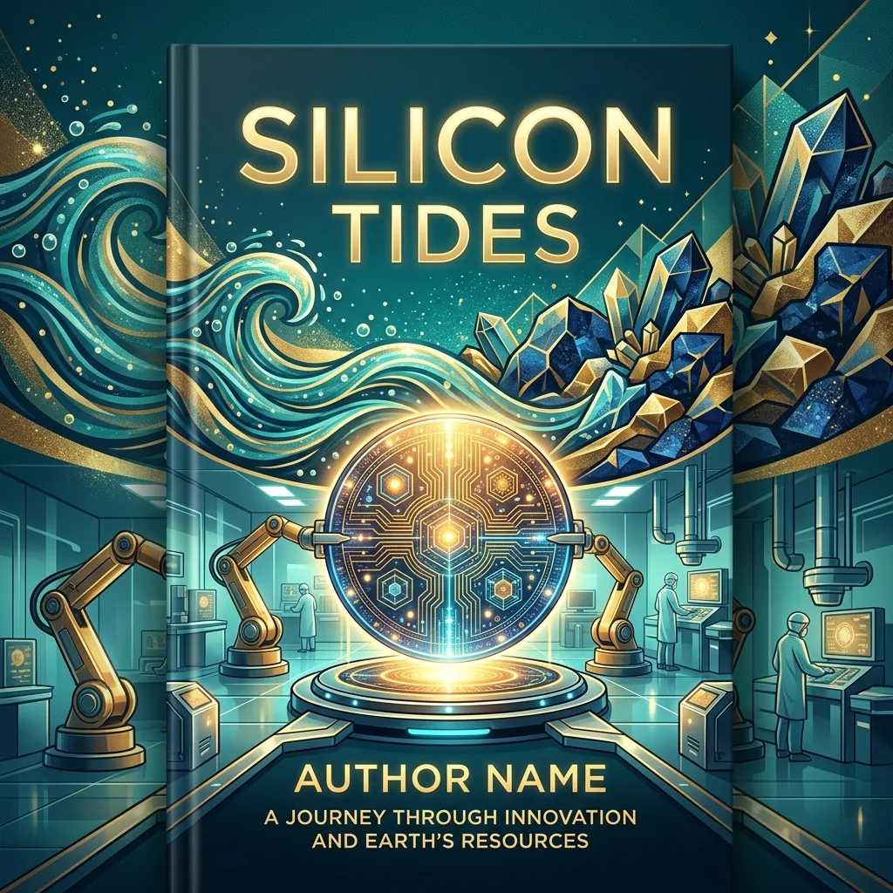

« Des atouts singuliers, des vulnérabilités tout aussi singulières »

"La souveraineté, au sens moderne, n'est plus seulement le contrôle d'un territoire et d'une frontière. C'est le contrôle des infrastructures qui permettent à une société de fonctionner. Et ces infrastructures sont de plus en plus numériques."Réflexion d'un juriste spécialisé en droit du numérique
Quelque part en France. Un parc industriel en région. Automne 2025.
Le directeur industriel de cette PME de mécanique de précision est un homme pragmatique. Il a passé vingt ans à moderniser son outil de production, investissant régulièrement dans des machines-outils numériques, des logiciels de CFAO, des systèmes de qualité. Son entreprise fabrique des pièces pour l'aéronautique et l'industrie de défense. Elle a une bonne réputation, un carnet de commandes solide, quarante employés.
En septembre 2025, il décide de franchir le pas suivant : automatiser partiellement une ligne de production avec un bras robotisé piloté par vision artificielle, et connecter l'ensemble à un système de supervision intelligent qui optimisera les cadences en temps réel. Le gain de productivité estimé : 30%. Le retour sur investissement : quatre ans. Le financement : en partie par un dispositif d'aide à la modernisation industrielle.
Trois semaines après avoir déposé sa demande de raccordement électrique supplémentaire auprès du gestionnaire de réseau local, il reçoit une réponse. Sa demande est enregistrée. Le renforcement du réseau nécessaire sera inscrit au plan de développement quinquennal. Délai prévisible : trente à quarante-deux mois.
Trente-cinq mois. Près de trois ans. Pour un raccordement électrique qui conditionne le déploiement d'un investissement industriel déjà financé et techniquement prêt. Son concurrent allemand, qui s'est installé dans une zone industrielle de Pologne, a obtenu son raccordement en six mois. Ce n'est pas une légende industrielle. C'est une réalité documentée que les organisations patronales françaises citent régulièrement dans leurs analyses de la compétitivité du territoire.
Ce directeur industriel n'est pas une victime de la transition numérique. Il en est un acteur volontaire. Ce à quoi il se heurte, c'est le sol de la France, à ses réseaux électriques, à ses procédures administratives. À l'écart entre l'ambition affichée de réindustrialisation et les infrastructures réelles qui la conditionnent.
Ce chapitre examine cet écart depuis plusieurs angles, en commençant par les atouts réels que la France et l'Europe possèdent dans la bataille de la souveraineté énergétique-numérique, avant de regarder avec la même honnêteté les vulnérabilités qui les accompagnent.
L'atout nucléaire français : une carte à jouer, pas encore jouée
La France occupe dans le paysage énergétique mondial une position qui est, en 2026, de plus en plus enviée. Son réseau électrique produit entre 65 et 75% de son électricité d'origine nucléaire, selon les années et l'état du parc. Quand les centrales tournent normalement, le bilan carbone de l'électricité française est l'un des plus bas d'Europe, comparable à celui de la Norvège avec son hydroélectricité et bien en dessous de l'Allemagne, qui brûle encore du charbon et du gaz pour compenser la fermeture de son parc nucléaire.
Cette électricité bas-carbone et relativement stable en prix a deux effets concrets sur la géographie des data centers européens. Le premier est l'attractivité : plusieurs projets de méga-data centers ont été annoncés ou sont en cours de construction en France ces dernières années, attirés par la promesse d'une électricité propre et compétitive. Le second est la tension : la puissance demandée par ces projets s'additionne à une demande industrielle et résidentielle qui augmente elle-même, et le réseau de distribution ne suit pas toujours.
Le parc nucléaire en 2026 : forces et fragilités
La France dispose en 2026 de cinquante-sept réacteurs nucléaires répartis sur dix-neuf sites, avec une puissance installée totale d'environ 63 gigawatts (depuis la mise en service commerciale de Flamanville 3 fin 2025). Ce parc a connu une période difficile en 2022 et 2023, quand des problèmes de corrosion sous contrainte ont obligé EDF à mettre en arrêt simultané un nombre record de réacteurs pour inspection et réparation. La production nucléaire est tombée à des niveaux que la France n'avait pas connus depuis les années 1980, forçant des importations massives et une hausse des prix de l'électricité.
Le parc est depuis revenu à des niveaux de disponibilité plus normaux, mais l'épisode a rappelé une vérité que les partisans du nucléaire préfèrent parfois oublier : la concentration de la production sur un seul vecteur, aussi fiable soit-il en régime nominal, crée une vulnérabilité systémique quand ce vecteur rencontre un problème qui affecte plusieurs installations simultanément.
L'âge moyen des réacteurs français est d'environ 39 ans en 2026 (World Nuclear Association). Ils ont été conçus pour fonctionner quarante ans et plusieurs ont fait l'objet de demandes d'autorisation de prolongation jusqu'à soixante ans. L'Autorité de sûreté nucléaire donne ces autorisations installation par installation, après inspection approfondie, et elle les conditionne à des travaux de mise à niveau parfois substantiels. Cette gestion de vieillissement est techniquement maîtrisée mais elle absorbe des ressources d'ingénierie et de maintenance considérables.
Le programme EPR2 : l'ambition et le calendrier réel
En 2022, le président de la République a annoncé un programme de construction de six nouveaux réacteurs EPR2, avec une option pour six autres. C'est la première annonce de construction de nouveaux réacteurs en France depuis la décision d'engager Flamanville 3 en 2007.
L'EPR2 est une évolution de l'EPR de première génération, dont Flamanville 3 est l'exemple français le plus douloureux : commencée en 2007, la centrale n'a été couplée au réseau qu'en 2024 et n'a atteint sa puissance maximale qu'en 2025, avec plus de douze ans de retard et un coût triple par rapport aux estimations initiales. Les concepteurs de l'EPR2 affirment avoir tiré les leçons de Flamanville et de ses cousins finlandais et britanniques, en simplifiant la conception, en standardisant les composants et en préparant plus soigneusement les chantiers avant de commencer les travaux.
Les premiers bétonnages du programme EPR2 sont attendus entre 2027 et 2029 selon les sites. La première mise en service ne serait pas antérieure à 2037 dans le scénario optimiste. C'est un horizon de onze à douze ans pour la première centrale, avec une incertitude considérable sur les délais et les coûts.
Ce décalage temporel est une donnée importante pour comprendre le paysage énergétique français de la prochaine décennie. Entre aujourd'hui et la mise en service des premiers EPR2, la France devra gérer l'arrêt progressif de ses réacteurs les plus vieux, le développement des énergies renouvelables pour combler les écarts, et une demande électrique qui va croître sous l'effet de l'électrification des usages et du développement des data centers. L'équation est serrée.
Réacteurs nucléaires français en 2026 57 unités puissance installée totale 63 GW
Âge moyen du parc environ 39 ans conçu pour 40 ans, prolongé à 60 ans
Premier bétonnage EPR2 prévu 2027 à 2029 selon les sites retenus
Première mise en service EPR2 2037 au plus tôt scénario optimiste
L'attractivité énergétique et ses limites concrètes
L'histoire de l'attractivité de la France pour les data centers est une histoire en deux temps. Premier temps : les grandes entreprises américaines décident d'installer des data centers en Europe pour répondre aux contraintes réglementaires sur la localisation des données des citoyens européens (RGPD, règlements sectoriels) et pour réduire la latence avec leurs utilisateurs européens. La France, avec son électricité bas-carbone et son infrastructure de connexion aux câbles sous-marins transatlantiques, figure dans les listes des destinations attractives.
Deuxième temps : les entreprises qui ont effectivement essayé de déployer de grands projets en France ont rencontré les réalités du terrain. Les délais de raccordement électrique, d'abord. Les procédures d'autorisation environnementale, ensuite, qui peuvent s'étendre sur plusieurs années quand des associations locales les contestent. La disponibilité du foncier adapté. Et, dans certains cas, des tensions sur les ressources en eau dans des régions qui commencent à connaître des périodes de stress hydrique en été.
Le résultat est que l'Irlande, malgré ses problèmes de saturation de réseau documentés au chapitre 3, reste en 2026 la principale destination européenne pour les grands data centers des hyperscalers américains, pour des raisons fiscales et de facilité administrative qui pèsent autant que les considérations énergétiques. La France attire des projets, mais moins qu'elle ne pourrait le faire si son administration était aussi agile que ses atouts énergétiques le méritent.
La France a l'électricité la plus propre d'Europe continentale et l'administration la plus longue pour raccorder un data center. Cette contradiction n'est pas une fatalité. C'est un choix de procédures et de priorités qui peut changer. Mais il ne changera pas tout seul.
La stratégie européenne : ambitions réelles, frictions réelles
L'Europe n'est pas un acteur neutre dans la bataille de la souveraineté énergétique-numérique. Elle a des outils, une tradition réglementaire, une capacité industrielle résiduelle, et une vision de la gouvernance numérique qui diffère significativement de celles des États-Unis et de la Chine. Mais elle a aussi des fragilités structurelles et une tendance au consensus qui peut être une force pour la construction de règles durables et un handicap pour la vitesse d'exécution.
L'AI Act et ses implications énergétiques implicites
Le règlement européen sur l'intelligence artificielle, adopté en 2024 après plusieurs années de négociation, est le premier cadre législatif complet sur l'IA dans le monde. Il classe les systèmes d'IA par niveau de risque et impose des obligations proportionnelles. Les applications à haut risque (recrutement, crédit, justice, infrastructures critiques) sont soumises à des exigences de transparence, de documentation et de supervision humaine. Les applications à risque inacceptable (notation sociale, manipulation cognitive) sont interdites.
Ce cadre n'aborde pas directement la consommation énergétique des systèmes d'IA. Mais il a des implications indirectes importantes. Les obligations de documentation et de transparence imposées aux systèmes à haut risque incluent potentiellement une description de leur infrastructure technique, ce qui crée les conditions pour y intégrer des informations sur leur empreinte énergétique. La Commission européenne a indiqué son intention de développer des actes délégués sur la durabilité des systèmes d'IA, qui pourraient inclure des critères d'efficacité énergétique.
Plus substantiellement, l'AI Act crée un précédent : il affirme que l'IA n'est pas une zone de non-droit, que des obligations s'appliquent aux développeurs et déployeurs de ces systèmes, et que ces obligations peuvent être renforcées par voie réglementaire sans attendre un consensus mondial. C'est une approche qui a suscité des critiques des entreprises tech américaines (trop rigide, freinera l'innovation) et des éloges des défenseurs des droits fondamentaux (enfin un cadre protecteur). La réalité, comme souvent, se jouera dans les détails de l'implémentation.
GAIA-X : la vision et le chemin parcouru
GAIA-X a été annoncé en 2019 comme le grand projet européen de cloud souverain. L'ambition était de créer une infrastructure cloud dont les règles de gouvernance, de portabilité des données et de transparence seraient européennes, permettant aux entreprises et administrations européennes de stocker et traiter leurs données sans dépendre exclusivement des hyperscalers américains soumis au Cloud Act américain.
En 2026, GAIA-X existe. C'est une association de droit luxembourgeois qui regroupe plusieurs centaines de membres, dont des entreprises européennes, des administrations, des instituts de recherche, et aussi, ce qui a provoqué un débat, des filiales européennes de Microsoft, Amazon et Google. La question de savoir si la présence de ces acteurs dans GAIA-X est une ouverture pragmatique ou un détournement de l'ambition initiale a divisé les observateurs.
Ce que GAIA-X a produit concrètement en 2026, c'est principalement un cadre de certification (le label GAIA-X) et des spécifications techniques de référence pour les services cloud conformes aux principes européens. Des écosystèmes sectoriels se sont développés, notamment dans la santé (European Health Data Space), l'automobile (Catena-X) et l'industrie manufacturière (Manufacturing-X). Ces écosystèmes ont une réalité opérationnelle, même si leur adoption reste partielle.
Ce que GAIA-X n'a pas produit, c'est un concurrent européen crédible aux hyperscalers américains en termes de puissance de calcul, de catalogue de services et de couverture mondiale. AWS, Azure et Google Cloud continuent de dominer le marché européen du cloud d'entreprise avec une part de marché combinée supérieure à 65%. Les acteurs européens (OVHcloud en France, Hetzner en Allemagne, Scaleway, Ionos) existent et servent des segments du marché, mais ils n'ont pas les économies d'échelle qui leur permettraient de rivaliser sur l'ensemble des cas d'usage.
Mistral AI : ce que l'exception française peut faire et ne peut pas faire
Mistral AI est devenue en 2023 et 2024 le symbole de la capacité européenne à produire des modèles d'IA de niveau mondial. L'entreprise parisienne, fondée par d'anciens chercheurs de Meta et DeepMind, a publié des modèles en open source qui se sont classés parmi les meilleurs de leur catégorie en termes d'efficacité (performance par paramètre, performance par watt). Elle a levé plusieurs centaines de millions d'euros auprès d'investisseurs européens et américains. Elle est devenue une référence dans le débat sur la possibilité d'un écosystème IA européen.
Mistral illustre deux choses simultanément. La première : le talent européen, et français en particulier, pour la recherche en IA est réel et de niveau mondial. Les grandes écoles d'ingénieurs françaises, l'INRIA, les laboratoires universitaires forment des chercheurs qui sont recrutés par les meilleures entreprises mondiales, quand ils ne fondent pas les leurs. La deuxième : les contraintes qui pèsent sur une startup européenne de l'IA sont structurellement différentes de celles de ses concurrentes américaines.
Mistral ne dispose pas de l'accès direct à des clusters de calcul comparables à ceux qu'OpenAI obtient via Microsoft Azure ou qu'Anthropic obtient via Amazon Web Services. Elle entraîne ses modèles sur des ressources cloud européennes et américaines louées, ce qui signifie que ses coûts d'entraînement sont plus élevés proportionnellement que ceux d'acteurs qui possèdent leur propre infrastructure. Elle n'a pas accès aux mêmes capacités de recherche fondamentale sur les puces, puisque l'Europe ne dispose pas d'équivalent à Nvidia ou à TSMC pour les semiconducteurs avancés.
Ces contraintes ne condamnent pas Mistral à l'échec. Elles définissent le terrain sur lequel elle compète, et ce terrain n'est pas le même que celui de ses concurrents les mieux dotés. Mistral a trouvé une voie en se concentrant sur l'efficacité algorithmique, les modèles open source qui créent un écosystème, et les partenariats avec des acteurs qui peuvent apporter l'infrastructure. C'est une stratégie viable. Ce n'est pas la même chose qu'une égalité de moyens.
Le Cloud de confiance et ses limites pratiques
La notion de Cloud de confiance est une création franco-française qui mérite un examen attentif parce qu'elle illustre bien la tension entre l'ambition de souveraineté et la réalité du marché.
L'idée est que certaines données sensibles des administrations et entreprises françaises (données de santé, données de défense, données stratégiques industrielles) ne devraient être hébergées que sur des infrastructures opérées par des entités soumises exclusivement au droit français et européen, affranchies de l'extraterritorialité du droit américain, notamment le Cloud Act qui permet au gouvernement américain de demander l'accès aux données hébergées par des entreprises américaines ou leurs filiales, où qu'elles soient dans le monde.
La solution imaginée est le modèle de licence de technologie : une entreprise européenne (Bleu pour Microsoft Azure, S3NS pour Google Cloud) obtient une licence pour opérer la technologie de l'hyperscaler américain, mais l'exploite dans une structure juridiquement séparée, sous contrôle français, sans accès des employés du partenaire américain. Les serveurs sont en France, les données ne sortent pas, le partenaire américain perçoit une redevance de licence mais n'a pas d'accès opérationnel.
Ce modèle a une logique juridique cohérente. Il a aussi des limites pratiques importantes. La dépendance technologique envers l'éditeur américain subsiste entièrement : si Microsoft ou Google décide demain de ne plus accorder la licence, ou de modifier substantiellement les conditions, l'opérateur européen n'a pas d'alternative immédiate. Les mises à jour technologiques suivent le calendrier de l'éditeur, pas celui de l'opérateur européen. Et le catalogue de services disponibles dans ces environnements certifiés est systématiquement moins riche et plus en retard que celui disponible dans les environnements standard des mêmes éditeurs.
C'est une amélioration par rapport à l'hébergement direct chez un hyperscaler américain. Ce n'est pas de la vraie indépendance technologique. Les deux affirmations sont vraies simultanément.
La souveraineté numérique ne s'achète pas sur étagère. Elle se construit, lentement, par l'accumulation de compétences, de capacités industrielles et de choix d'approvisionnement cohérents sur le long terme. Un cloud certifié européen qui tourne sur une technologie américaine sous licence est une étape, pas une destination.
La vulnérabilité des câbles sous-marins : l'invisible fondation de l'économie numérique
Il y a une dimension de la souveraineté numérique qui est presque complètement absente des débats publics, probablement parce qu'elle est invisible et lointaine. Elle concerne des fils de verre de quelques centimètres de diamètre qui reposent au fond des océans.
Le réseau mondial qui ne se voit pas
Près de 99% du trafic international de données transite par des câbles sous-marins en fibre optique, pas par les satellites. Les satellites Starlink et ses concurrents transportent une part infime du trafic mondial, essentiellement dans des zones sans couverture terrestre. Un email envoyé de Paris à San Francisco voyage physiquement par un câble qui part du Havre, traverse l'Atlantique Nord au fond de l'océan, et arrive en Virginie ou à Long Island avant de remonter vers les serveurs de destination.
Le réseau de câbles sous-marins compte en 2026 environ 550 systèmes actifs, représentant plus de 1,3 million de kilomètres de câbles. Chaque câble est un assemblage de plusieurs paires de fibres optiques entourées de couches de protection contre la pression, la corrosion et les ancres de pêcheurs. La capacité de transmission d'un câble moderne peut atteindre plusieurs dizaines de terabits par seconde, soit l'équivalent de plusieurs millions d'appels téléphoniques simultanément.
Ce réseau est remarquablement robuste dans ses redondances globales. Mais il a des points de concentration physique qui sont des vulnérabilités évidentes. Certains détroits géographiques voient passer une proportion disproportionnée du trafic mondial. Le détroit de Malacca, entre la Malaisie et Singapour, concentre plusieurs dizaines de câbles qui relient l'Asie à l'Europe et au Moyen-Orient. Le canal de Suez et la mer Rouge concentrent les câbles qui relient l'Europe à l'Asie en évitant l'Afrique. Le détroit du Bosphore concentre les connexions vers la mer Noire.
Les incidents qui rappellent la fragilité
En février 2024, plusieurs câbles sous-marins en mer Rouge ont été endommagés, probablement par des ancres de navires dans un contexte de tensions liées aux attaques des Houthis sur le trafic maritime dans la région. L'incident a provoqué des perturbations significatives sur les connexions entre l'Europe et l'Asie, avec des ralentissements mesurables sur de nombreux services internet et une hausse des temps de latence pour les communications Asie-Europe. Il a fallu plusieurs semaines pour que les réparations soient effectuées et que les connexions soient pleinement rétablies.
En novembre 2024, deux câbles en mer Baltique ont été sectionnés, l'un reliant l'Allemagne à la Finlande, l'autre reliant la Suède à la Lituanie. Les enquêtes ont rapidement orienté les soupçons vers un sabotage délibéré, probablement commis par un navire qui avait traîné son ancre sur plusieurs dizaines de kilomètres selon une trajectoire trop précise pour être accidentelle. L'incident a ranimé les débats sur la vulnérabilité des infrastructures sous-marines aux actes de sabotage étatiques ou para-étatiques.
Ces incidents ne sont pas isolés. Des câbles sous-marins sont endommagés régulièrement, le plus souvent accidentellement (ancres, chaluts de pêche, glissements de terrain sous-marins), parfois par des actes délibérés. La plupart de ces incidents sont absorbés sans perturbation visible pour les utilisateurs finaux grâce aux redondances du réseau. Mais à mesure que la concentration du trafic sur certains câbles augmente, la résilience globale du système ne s'améliore pas nécessairement au même rythme.
La stratégie européenne des câbles et le rôle de la France
La France occupe une position géographique privilégiée dans la topologie mondiale des câbles sous-marins. La côte atlantique française, et notamment les installations du Havre et de Brest, est un point d'atterrissage majeur pour les câbles transatlantiques. Marseille est le principal hub européen pour les câbles qui arrivent de l'Asie via le canal de Suez et la Méditerranée. Ces deux positions font de la France un nœud critique de la connectivité numérique européenne.
Les territoires français d'outre-mer jouent également un rôle stratégique peu visible. La Guyane, la Martinique, la Guadeloupe, la Réunion, Mayotte, la Nouvelle-Calédonie, la Polynésie française : chacun de ces territoires est un point d'ancrage pour des câbles régionaux qui structurent la connectivité de zones géographiques importantes. La France est l'un des rares pays à avoir une présence physique sur tous les océans, ce qui lui confère une capillarité dans le réseau mondial de câbles que peu de nations peuvent égaler.
L'Union européenne a commencé à prendre conscience de cette vulnérabilité stratégique. La Commission européenne a publié en 2023 une communication sur la résilience des infrastructures de communication sous-marines. Des discussions sont en cours sur la nécessité de financer des câbles stratégiques européens, de protéger les zones sensibles d'atterrissage, et de développer des capacités de réparation rapide. Mais la concrétisation de ces discussions en investissements et en protections opérationnelles prend du temps, et les vulnérabilités identifiées restent, en 2026, largement non résolues.
Câbles sous-marins actifs dans le monde environ 550 systèmes représentant 1,3 million de km
Part du trafic international par câbles près de 99% les satellites ne transportent qu'une fraction
Câbles endommagés par an (moyenne) environ 200 incidents principalement accidentels
Ce que cela signifie pour le citoyen et l'entreprise en France
Les enjeux de souveraineté énergétique-numérique ne sont pas réservés aux instances de gouvernance et aux grandes entreprises. Ils ont des implications concrètes et quotidiennes pour les individus et les PME qui font la texture de l'économie et de la société françaises.
La facture d'électricité et les data centers
La question de savoir si le développement des data centers en France augmente les prix de l'électricité pour les ménages et les entreprises est plus complexe qu'il n'y paraît.
D'un côté, les grands consommateurs industriels comme les data centers bénéficient de tarifs négociés qui reflètent leur prévisibilité de consommation et leur capacité à jouer un rôle de flexibilité pour le réseau. Ces tarifs sont inférieurs aux tarifs réglementés résidentiels, ce qui peut créer un sentiment d'injustice dans le partage du coût des infrastructures de réseau.
De l'autre, les revenus générés par ces grands consommateurs contribuent à financer l'entretien et le développement des réseaux de transport et de distribution, dont bénéficient aussi les ménages et les PME. Et la présence de grands centres de traitement de données en France est une condition de la disponibilité locale de services numériques à faible latence, qui ont une valeur économique réelle pour l'ensemble des utilisateurs.
Le mécanisme de l'ARENH, Accès Régulé à l'Électricité Nucléaire Historique, qui permettait aux fournisseurs alternatifs d'acheter une partie de la production d'EDF à un prix régulé inférieur au marché, a pris fin en 2025. Son successeur, le système de contrats de long terme entre EDF et les grands consommateurs, est encore en cours de mise en place. La transition crée une période d'incertitude sur les prix de l'électricité industrielle qui affecte directement la compétitivité des investissements en France, y compris dans les data centers.
Où sont vos données, et à qui ?
La question de la localisation géographique des données personnelles et professionnelles est devenue, depuis l'entrée en vigueur du RGPD en 2018, un sujet de préoccupation croissante pour les entreprises et les particuliers. Mais la localisation n'est qu'une partie de la question. L'autre partie est la juridiction.
Une donnée stockée sur un serveur situé physiquement en Irlande dans un data center d'une filiale européenne de Microsoft est soumise au droit irlandais et au droit européen pour sa protection. Mais l'entité qui exploite ce service, si c'est une filiale d'une société américaine, peut être soumise à des injonctions légales américaines en vertu du Cloud Act, qui permet aux autorités américaines d'exiger l'accès aux données détenues par des entreprises américaines ou leurs filiales, indépendamment de leur localisation physique.
La Cour de justice de l'Union européenne a rendu plusieurs arrêts (Schrems I en 2015, Schrems II en 2020, et les décisions subséquentes) qui ont complexifié les transferts de données entre l'Europe et les États-Unis, reconnaissant la tension entre le droit européen à la protection des données et les pratiques de surveillance américaines. Ces arrêts ont forcé des renégociations et des adaptations, sans résoudre la tension fondamentale.
Pour l'entreprise ou le citoyen ordinaire, la conséquence pratique est la suivante : si vous utilisez des services hébergés exclusivement en Europe par des opérateurs européens non soumis à des juridictions extra-européennes, votre niveau de protection juridique est maximum. Si vous utilisez des services d'un hyperscaler américain, même via une filiale européenne et des serveurs physiquement en France, il existe une possibilité juridique, dont la probabilité pratique de matérialisation est débattue mais non nulle, que des autorités américaines puissent accéder à ces données.
Les choix concrets que vous pouvez faire
Je ne plaiderai pas ici pour un isolationnisme numérique qui serait à la fois impraticable et contre-productif. Les services des grands acteurs américains ont des qualités qui expliquent leur adoption massive, et priver les entreprises et citoyens français d'y accéder ne résoudrait aucun des problèmes de fond.
Mais il y a des choix qui ont du sens, individuellement et collectivement. Pour les données les plus sensibles, qu'elles soient médicales, juridiques, stratégiques ou simplement personnelles et intimes, choisir des services hébergés par des opérateurs européens sous juridiction exclusivement européenne est une décision raisonnée. OVHcloud, Hetzner, Infomaniak, Scaleway et plusieurs autres acteurs européens offrent des niveaux de service qui répondent aux besoins de la grande majorité des usages professionnels et personnels.
Pour les outils d'IA, la question est plus complexe parce que les modèles les plus performants sont actuellement ceux des acteurs américains. Mais des alternatives européennes existent et progressent : Mistral AI propose des modèles accessibles via API et déployables localement, plusieurs autres initiatives européennes sont en cours. Et l'installation locale de modèles open source sur des infrastructures maîtrisées est une option techniquement accessible pour les organisations qui ont les compétences internes pour la déployer.
La sobriété numérique est une autre dimension de ce choix. Non pas l'ascétisme, mais la conscience : est-ce que ce service a besoin d'être hébergé dans un data center à faible bilan carbone ou dans n'importe quel data center ? Est-ce que cet envoi d'email avec une pièce jointe de 20 mégaoctets ne pourrait pas être remplacé par un lien vers un fichier partagé ? Est-ce que cette vidéo de formation doit être en 4K pour être pédagogiquement efficace ? Ces questions ne changent pas le monde à l'échelle individuelle. À l'échelle de millions d'organisations et de centaines de millions d'utilisateurs, elles comptent.
Les métiers et la formation : l'urgence invisible
Il y a une dimension de la souveraineté énergétique-numérique qui est rarement placée au même niveau que les câbles, les puces et les centrales électriques, probablement parce qu'elle est diffuse et lente, et que ses effets se mesurent sur des décennies plutôt que sur des trimestres. C'est la question des compétences humaines.
La pénurie documentée
France Travail, les organisations patronales sectorielles et les établissements de formation s'accordent sur un diagnostic : la France manque d'ingénieurs et de techniciens dans les domaines qui conditionnent la souveraineté énergétique-numérique. Ingénieurs en génie électrique capables de concevoir et d'exploiter les réseaux intelligents de la transition énergétique. Spécialistes de la cybersécurité des infrastructures critiques. Physiciens et ingénieurs en microélectronique capables de travailler sur les technologies de semiconducteurs avancés. Experts en exploitation et optimisation des systèmes d'IA.
Cette pénurie n'est pas propre à la France : elle est européenne et mondiale. Mais la France y ajoute une spécificité qui aggrave le problème : le brain drain, le flux continu de ses meilleurs talents vers les États-Unis et, dans une moindre mesure, vers le Royaume-Uni et la Suisse.
Le brain drain : mesurer ce qu'on préfère ne pas regarder
Estimer avec précision le brain drain français dans les domaines de l'IA et des technologies numériques est difficile, parce que les statistiques de mobilité des personnels très qualifiés sont fragmentaires. Mais les signaux convergent.
Les entreprises françaises les plus prestigieuses dans ces domaines (Mistral AI, Hugging Face, Nabla, Owkin, et plusieurs autres) ont toutes des cofondateurs, des dirigeants ou des chercheurs qui ont été formés en France et ont travaillé plusieurs années aux États-Unis avant de revenir. Hugging Face, la plateforme de partage de modèles d'IA qui est devenue une référence mondiale, a été fondée par des Français mais est basée à New York. Ce n'est pas un hasard : les investisseurs, les partenaires technologiques et les piscines de recrutement sont là où les écosystèmes sont les plus denses.
La différence de rémunération entre un ingénieur en IA travaillant à Paris et le même profil travaillant à San Francisco, Seattle ou New York est substantielle. Selon les estimations disponibles, un ingénieur senior en ML avec cinq à sept ans d'expérience peut espérer une rémunération totale (salaire, bonus, actions) deux à quatre fois supérieure aux États-Unis qu'en France, en tenant compte des différences de coût de la vie mais pas de la fiscalité. La fiscalité française aggrave encore l'écart pour les hauts revenus.
Des programmes comme le pass French Tech, les aides à la création d'entreprise innovante, les chaires d'excellence dans les grandes écoles, les laboratoires communs universités-industrie produisent des résultats. Il y a davantage de startups deeptech en France en 2026 qu'il y a dix ans, davantage d'investissement en capital-risque, davantage de chercheurs qui restent. Mais l'ampleur de l'effort reste disproportionnée par rapport à l'ampleur du défi.
La formation comme enjeu de souveraineté individuelle
Il y a une dimension de la question de formation qui dépasse les politiques publiques et qui concerne chaque individu dans sa relation à la transition numérique. C'est la question de la littératie numérique et de l'IA.
Un citoyen qui ne comprend pas les fondements de l'IA, qui ne sait pas interroger les systèmes qu'il utilise, qui n'est pas capable d'évaluer la fiabilité d'une information générée par un modèle, est dans une relation de dépendance et de vulnérabilité vis-à-vis des outils qui structurent de plus en plus son environnement informationnel, professionnel et social. Cette dépendance est une forme de perte de souveraineté individuelle.
Le premier volume de cette collection était largement consacré à cet enjeu de formation et d'agentivité face à l'IA. Je n'y reviendrai pas en détail ici. Mais il est important de souligner que la formation à l'IA et au numérique n'est pas seulement un enjeu de compétitivité économique : c'est un enjeu civique et démocratique. Les décisions collectives sur la gouvernance de ces technologies ne pourront pas être prises de manière éclairée par des citoyens qui n'en comprennent pas les mécanismes de base.
La formation continue des adultes en activité, la requalification des travailleurs dont les métiers sont transformés par l'automatisation, l'initiation des jeunes aux concepts fondamentaux de l'informatique et de l'IA dès l'école primaire : ce sont des investissements dont les rendements sont diffus, lents et difficiles à mesurer dans un cycle électoral. Ce sont aussi les investissements les plus structurants pour la capacité d'une société à maîtriser les technologies qui la traversent plutôt que d'en être traversée.
La souveraineté numérique d'un pays commence dans les salles de classe et dans les programmes de formation continue, bien avant d'atteindre les data centers et les réseaux électriques. Une population qui comprend les outils qu'elle utilise est une population qui peut en contrôler l'usage collectif. Une population qui les subit sans les comprendre est une population qui ne peut que les subir.
Ce que l'Europe peut faire que les États ne peuvent pas faire seuls
La discussion sur la souveraineté énergétique-numérique se tient souvent au niveau national, ce qui est compréhensible politiquement mais insuffisant techniquement. Les réalités physiques et économiques qui structurent ce domaine sont européennes et mondiales, pas hexagonales.
La masse critique européenne
L'Europe a une masse critique qu'aucun État membre pris isolément ne peut égaler face aux grands acteurs mondiaux. Le marché unique européen compte 450 millions de consommateurs et des millions d'entreprises qui représentent un pouvoir d'achat et un volume de données considérables. Un éditeur de service numérique qui veut accéder à ce marché doit respecter les règles européennes, quelle que soit sa nationalité. C'est le levier fondamental de la régulation européenne du numérique, et l'AI Act en est l'illustration la plus récente.
En matière d'énergie, la mise en place d'un marché européen de l'électricité plus intégré, avec des capacités d'interconnexion renforcées entre les pays membres, permettrait une meilleure valorisation des spécificités de chaque pays. L'électricité éolienne du nord de l'Europe (Scandinavie, mer du Nord) est complémentaire à l'électricité solaire du sud (Espagne, Portugal, Grèce) et à l'électricité nucléaire stable de la France. Un réseau plus interconnecté permettrait d'optimiser l'utilisation de ces différentes sources et de réduire la dépendance de chaque pays aux sources fossiles d'appoint.
Le Critical Raw Materials Act et ses limites
L'Union européenne a adopté en 2023 le Critical Raw Materials Act, qui fixe des objectifs de diversification des approvisionnements en métaux critiques pour 2030 : produire au moins 10% des besoins sur le sol européen, traiter au moins 40% sur le sol européen, ne pas dépendre d'un seul pays tiers pour plus de 65% d'un métal stratégique.
Ces objectifs sont ambitieux et leur réalisation implique des choix politiques et des investissements qui ne sont pas tous facilement acceptables. Ouvrir de nouvelles mines en Europe est une option techniquement réalisable dans plusieurs cas (lithium au Portugal, nickel en Finlande, terres rares en Suède, cobalt en Finlande et en Suède), mais qui se heurte à des oppositions locales significatives, à des procédures d'autorisation longues, et à des coûts de production généralement supérieurs aux approvisionnements extra-européens.
Le recyclage des métaux critiques des équipements électroniques en fin de vie est une alternative plus politiquement consensuelle, mais qui nécessite des investissements dans les infrastructures de collecte et de traitement, et dont le potentiel est limité par les quantités de métaux disponibles dans les gisements urbains existants.
L'honnêteté oblige à dire que l'Europe est encore très loin des objectifs du Critical Raw Materials Act, et que le chemin pour les atteindre en 2030 implique des décisions que les gouvernements européens n'ont pas encore prises ou n'ont prises que partiellement.
La convergence nécessaire des politiques énergétique et numérique
Il y a un angle mort dans la plupart des discussions sur la souveraineté européenne : les politiques énergétique et numérique sont conduites dans des cadres administratifs et législatifs largement séparés. La Direction générale Énergie de la Commission européenne et la Direction générale Connect sont deux entités distinctes avec des agendas qui se croisent mais ne sont pas coordonnés de manière systématique.
Or les liens entre énergie et numérique sont, comme tout ce livre le montre, profonds et bidirectionnels. Les décisions sur le mix énergétique européen conditionnent la compétitivité des entreprises numériques européennes. Les décisions sur la régulation des data centers conditionnent la demande énergétique et les prix de l'électricité. Les décisions sur les standards de durabilité du numérique conditionnent l'innovation dans les technologies d'efficacité énergétique.
Une politique cohérente de souveraineté énergétique-numérique européenne nécessiterait une coordination que les institutions actuelles ne permettent pas naturellement. Elle est possible : l'exemple de la coordination qui a permis l'adoption simultanée du Green Deal et de la stratégie numérique européenne montre que la Commission peut intégrer ces dimensions quand la volonté politique est là. Mais cette coordination doit être active et permanente, pas épisodique.
La France, qui préside régulièrement le Conseil de l'Union européenne et qui a une tradition d'influence dans la construction des politiques industrielles européennes, est bien placée pour jouer un rôle moteur dans cette intégration. Elle a les atouts énergétiques et les compétences numériques pour être crédible. Il lui manque, pour l'instant, une vision stratégique assez claire et assez partagée pour entraîner les partenaires européens.
Notes et sources du chapitre 7
• Parc nucléaire français 2026 : 57 réacteurs opérationnels, ~63 GW (World Nuclear Association, profil France, actualisé 1er avr. 2026).
• Part nucléaire dans mix électrique (~70%) : WNA, profil France, données 2024.
• Âge moyen du parc (~39 ans) : WNA, profil France, avril 2026.
• Flamanville 3 : début construction déc. 2007, couplage réseau déc. 2024, puissance 100% déc. 2025 (WNA ; EDF).
• Programme EPR2 (6 réacteurs) : annonce présidentielle, 10 fév. 2022 ; loi d'accélération nucléaire adoptée mars 2023.
• ARENH fin 31 déc. 2025 : WNA ; CRE.
• Câbles sous-marins mer Rouge endommagés (fév. 2024) : SubTel Forum, mars 2024 ; DataCenterDynamics, 26 fév. 2024.
• Câbles mer Baltique sectionnés (nov. 2024) : Reuters, 18 nov. 2024 ; enquêtes en cours.
• Critical Raw Materials Act : règlement (UE) 2024/1252, adopté 2023, publié mai 2024 ; Commission européenne.
• Parts de marché cloud EU (AWS/Azure/GCP >65%) : Synergy Research Group, données 2024-2025.
Chapitre suivant :
Le manifeste énergétique
Choisir le futur que l'on veut alimenter